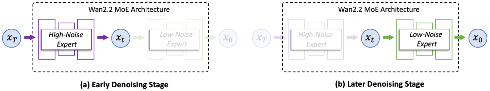
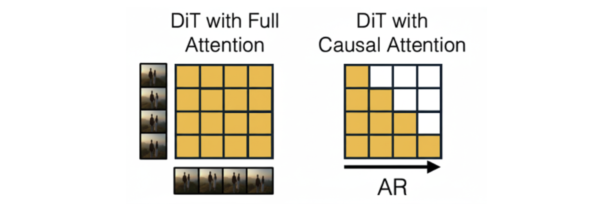
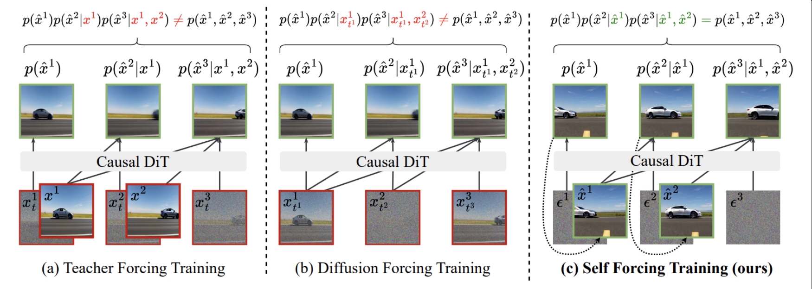
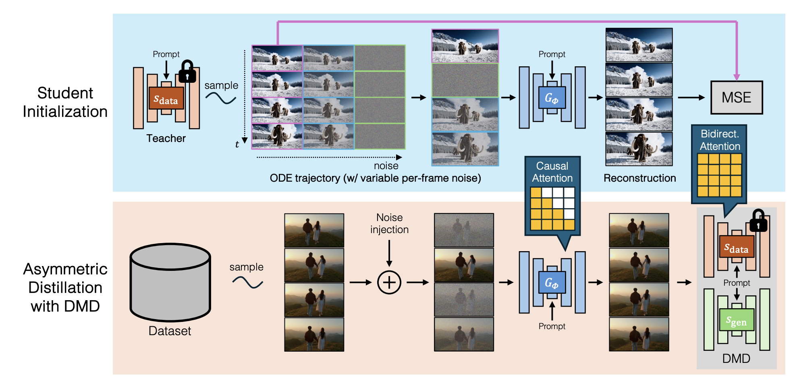

TL;DR: The FastVideo Team is excited to share some of our progress on distilling the Wan2.2-A14B model into an autoregressive architecture, alongside the release of our preview checkpoint for CausalWan2.2-I2V-A14B. In this blog, we’ll first discuss the new MoE architecture behind the open-source SOTA performance of Wan2.2, the differences between bidirectional and autoregressive video models, and then share some of the challenges we encountered when applying Self-Forcing distillation to this architecture.
Model Link
Wan2.2-A14B Model Architecture
In large language models, the MoE (mixture of experts) architecture consists of replacing a single feed-forward network, which is always active for every input in a transformer block, with several feed-forward networks (called experts), which are sparsely activated depending on the input. This architecture is widely prevalent in modern large language models since it allows for models with more parameters without a proportional increase in inference cost. Similarly, the Wan2.2-A14B series of models from Alibaba uses a new MoE architecture in which the two experts (high-noise and low-noise) are two diffusion transformers (rather than FFNs) that run sequentially and are each responsible for denoising a fraction of the total timesteps.
Specifically, if timestep $0$ represents a clean frame, all denoising timesteps larger than or equal to a boundary timestep $b$ are handled by the high noise expert and the rest are handled by the low noise expert. This means we can effectively think of the high noise model as predicting $x_b$, corresponding to the noisy video at the boundary timestep, while the low noise model predicts the clean video $x_0$.

Figure 1: Wan2.2 Architecture (Source: Alibaba)
Since it operates during the early timesteps of the denoising process, the high-noise expert is responsible for the high-level structure and motion of the video, while the low-noise expert adds more fine-grained details during later denoising timesteps to produce the final video. The Wan team found that this architecture achieved better performance than Wan 2.1 and using Wan 2.1 with a low noise or high noise expert. However, this performance gain comes at a cost: there are now two 14B models in memory, increasing RAM requirements.
Bidirectional vs Autoregressive Generation
Bidirectional video models like OpenAI’s Sora, Google’s Veo, and Wan2.2-A14B are ideal when you want a single, fixed-length video. All frames are simultaneously denoised, and all frames can attend to each other, allowing future frames to affect past frames that are generated and vice versa (left part of figure 2). This leads to good temporal consistency, but high latency in generating videos. Thus, for workloads like extending or editing a video, bidirectional models are not ideal, as you need to re-run the generation process for all frames to get the updated video.
Rather than generating the entire video upfront, autoregressive models generate the next chunk* of a video conditioned only on prior output chunks, with chunks being able to attend only to themselves and past chunks. This makes long-horizon and streaming generation much more natural: we can keep going, without needing to keep all frames in the context, allowing for low-latency real-time video generation. This causal architecture is necessary for action-conditioned video generation, where the model must predict future frames from past frames and user actions.

Figure 2: Attention matrix for bidirectional and autoregressive models (Source: Towards Video World Models)
Google’s Genie 3, Tencent’s Yan, and SkyworkAI’s Matrix Game 2.0 are examples of such autoregressive models, which can produce “playable” dynamic environments that can be navigated in real time (often termed world models). As a result, these models are capable of dynamic, on-the-fly editing and generation of a video stream. We can do things like inject new conditions mid-stream, update prompts, replace keyframes, masks, or motion hints, and then only regenerate future frames, rather than the entire clip itself!
Self-Forcing
While autoregressive models are better suited for live streaming video generation than bidirectional models, naively training them from scratch is slower, and the final model tends to be lower in quality. Additionally, converting a working bidirectional model to an autoregressive one isn’t trivial, as the latter suffers from error accumulation, leading to autoregressive drift as additional frames are generated. Prior to Self-Forcing, the two main autoregressive training methods were Teacher Forcing and Diffusion Forcing. During training, Teacher Forcing conditions a model on ground-truth latents while Diffusion Forcing conditions a model on noisy ground-truth latents, both of which don’t match the distribution of generated frames at inference.
Self-Forcing attempts to solve this problem by conditioning each frame’s generation on previously generated frames, resolving the train-test distribution mismatch. Since the inference process is simulated during training, Self-Forcing can also leverage KV caching, resulting in an efficient autoregressive rollout. To align the distribution of the generated videos with that of real videos, Self-Forcing can utilize a variety of distribution matching losses, including GAN (Generative Adversarial Network), SiD (Score Identity Distillation), and DMD (Distribution Matching Distillation), with DMD being the most widely used. For more details on DMD please refer to this paper or our previous post.

Figure 3: Autoregressive Video Model Training Methods (Source: Self-Forcing Paper)
When combined with a causal initialization procedure, Self-Forcing becomes a SOTA technique for distilling bidirectional diffusion models (which potentially require many denoising steps) into few-step autoregressive models and has already been scaled up to 14B parameter models and extended to create world models (e.g. Matrix Game 2.0).

Figure 4: Full Self-Forcing Distillation Procedure (Source: CausVid Paper)
Applying Self-Forcing To Wan2.2-A14B
When applied to dense models, the original Self-Forcing recipe works well. However, it is not obvious how to translate this existing recipe to Wan2.2-A14B’s MoE architecture. Below, we describe some of the challenges we encountered when naively applying Self-Forcing to the MoE architecture.
High Memory Requirements
Due to the higher parameter count of the MoE, the fact that 3 separate MoE models are required for DMD distillation (real score model, fake score model, and the generator), and the use of KV-caching in Self-Forcing, VRAM and RAM usage can quickly explode without careful memory management.
Distill both Experts Simultaneously
At the time of this blog, the only current open-source bidirectional DMD recipe for the Wan2.2 MoE first distills the high noise expert and then distills the low noise expert, which results in a more complicated distillation procedure for bidirectional models since there are now two independent distillation runs. Furthermore, this approach isn’t feasible for autoregressive models if we want to condition the high noise expert on past predicted clean frames (which come from the low noise model). Therefore, our current recipe aims to distill both high and low-noise experts in the same distillation run.
Updating the Generator and Fake Score Model
In addition to hogging up memory, the fact that the use of a DMD loss requires 3 separate models also has actual algorithmic implications when applying Self-Forcing.
In particular, Self-Forcing requires sampling a timestep to add noise to the generator’s output videos in order to calculate the loss for the generator and the finetuning loss for the fake score model. When the generator is an MoE in Self-Forcing, videos can either be generated by a forward pass through the high noise expert or a forward pass through both high and low noise experts, making it unclear how we should sample this timestep.
For our current recipe, we found that the best setting is:
-
Sampling a timestep from the high noise region to add noise to videos generated by only the high noise generator
-
Sampling a timestep from the full range to add noise to videos generated by both the high noise and low noise generators.
I2V Inference
Since our distilled model is trained as a text-to-video model, how we make it compatible for image-to-video inference isn’t obvious. One of the hyperparameters of Self-Forcing is $N$, the number of frames that constitute a chunk. For image-to-video inference, it isn’t clear whether we should treat the input image as a chunk, whereby we replicate the image $N$ times, or just as a single frame. In our experiments, we used $N=3$, and found that treating the input image as a chunk resulted in a clunky transition between the first frame and the rest of the frames. Thus, we ended up treating the image as a single frame during causal initialization, distillation, and image-to-video inference.
Conditioning the High Noise Generator
During autoregressive rollout, conditioning the high noise generator using clean chunks $X_0$ or noised chunks $X_b$ is unclear. During bidirectional inference, the high noise generator is only required to denoise up to the boundary timestep, so one would think it makes sense to condition the high noise generator using noised chunks $X_b$. While this does produce high-quality text-conditioned videos, we found that it fails to give good generations in the image-to-video case. Conversely, using $X_0$ to condition the high noise generator produces videos with increased color saturation and less motion in the case of text-to-video. However, we found that this actually results in good image-to-video generation and hence we adopt this strategy for all of the results you’re about to see.
Initial Results and Next Steps
We have conducted initial experiments on Wan2.2-A14B with Self-Forcing distillation. There are some promising image-to-video results, but we are still working on improving the quality of the recipe. In particular, notice that while some results look good, others have inconsistencies and deviate from the input image (the first frame in the video). We are currently investigating the cause of this and are working on improving the quality of the videos. Stay tuned for more updates! Below are some of the good and bad results, side by side.
Good #1
Prompt: Some friends dancing and having fun together in circles, at a party surrounded by colored lights at a party, in a fancy old place, in a view from below them.
Bad #1
Prompt: A determined climber is scaling a massive rock face, showcasing exceptional strength and skill. The person, clad in a teal shirt and dark pants, climbs with precision, their movements measured and deliberate. They are secured by climbing gear, which includes ropes and a harness, emphasizing their commitment to safety. The rugged texture of the sandy-colored rock provides an imposing backdrop, adding drama and scale to the climb. In the distance, other large rock formations and sparse vegetation can be seen under a bright, overcast sky, contributing to the natural and adventurous atmosphere. The scene captures a moment of focus and challenge, highlighting the climber's tenacity and the breathtaking environment.
Good #2
Prompt: A man wearing grey shorts jumps rope in a gym, weights and gym equipment in the background.
Bad #2
Prompt: A little girl wearing a pink security helmet and denim overall discovers the art of cycling amidst the serene park, as the camera captures her graceful progress.
Good #3
Prompt: Flying over a peninsula covered in bushy trees, while discovering the sea around it, painted a beautiful turquoise blue, on a sunny day.
Bad #3
Prompt: Little baby with a pacifier, playing with a teddy bear, accompanied by his mom, both sitting on a bed, in a close view.
Good #4
Prompt: Skillful cyclist doing a wheelie on a bike while riding through a forest, on a dirt road, surrounded by many trees, in the morning.
Bad #4
Prompt: Young man skating with a skateboard on the ramps with graffiti of a park with trees, on a sunny day.
Good #5
Prompt: In the video, a lone rider guides a majestic horse across an expansive, open field as the sun sets in the background. The rider, dressed in a classic blue shirt and wide-brimmed hat, sits confidently in the saddle, silhouetted against the warm glow of the evening sky. The horse moves gracefully, its mane and tail flowing with each step, creating a sense of harmony between horse and rider. Surrounding the pair, towering trees form a natural border, their leaves gently rustling in the breeze. The shadows lengthen on the ground, accentuating the serene and timeless feel of the scene. The distant hills and wooden fences frame the horizon, adding depth to the tranquil landscape. A few horses graze peacefully in the background, blending into the pastoral setting. The overall ambiance evokes a sense of calmness and quietude, capturing a perfect moment in the golden light of dusk.
Bad #5
Prompt: Flying over a forest of abundant trees and vegetation, with a river and a dam, with houses and hills in the surroundings.
Acknowledgement
We thank Anyscale, MBZUAI, and GMI Cloud for supporting the development and release of CausalWan-MoE. We are especially grateful to the developers of the Wan series, whose work laid the foundation for our advancements. Our implementation of Self-Forcing distillation would not be possible without the effort from the teams behind DMD2, CausVid, and Self-Forcing.
The Team
Meet the team behind CausalWan-MoE-Preview:
- Will Lin, Wei Zhou, Matthew Noto, Peiyuan Zhang: Causal Initialization, Self-Forcing Recipe, Training Pipeline, Distillation experiments
- Richard Liaw: Advisor
- Hao Zhang: Advisor
Citation
If you use FastWan for your research, please cite our work:
@software{fastvideo2024,
title = {FastVideo: A Unified Framework for Accelerated Video Generation},
author = {The FastVideo Team},
url = {https://github.com/hao-ai-lab/FastVideo},
month = apr,
year = {2024},
}
Ready to experience lightning-fast video generation? Check out our documentation and FastVideo to get started today. Available now with native support for ComfyUI, Apple Silicon, Windows WSL, and Gradio web interface!
The FastVideo team continues to push the boundaries of real-time video generation. Stay tuned for more exciting developments!
* For simplicity, one can think of a chunk/frame of a video as being equivalent, although a chunk is technically a group of frames that are denoised simultaneously. Thus, in the case of autoregressive video models, you’d be predicting the next chunk rather than the next frame, making these models "chunk-wise" autoregressive.